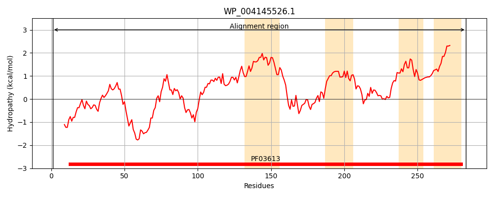
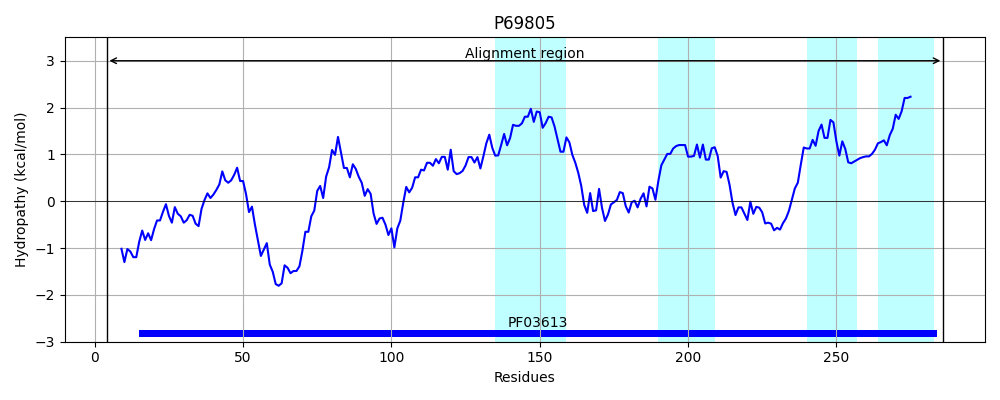
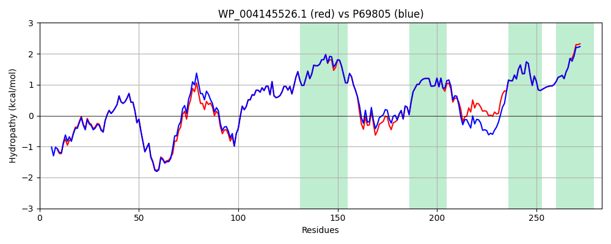

Hit Accession: P69805
Hit TCID: 4.A.6.1.1
Hit Description: gnl|BL_ORD_ID|11279 gnl|TC-DB|P69805|4.A.6.1.1 Mannose permease IID component - Escherichia coli.
Mach Len: 283
e:0.000000
Query TMS Count : 4
Hit TMS Count: 4
TMS-Overlap Score: 4.150000
Predicted Substrates:CHEBI:17315;D-glucosamine, CHEBI:4162;2-amino-2-deoxy-D-glucopyranose, CHEBI:4207;aldehydo-D-mannosamine, CHEBI:4167;D-glucopyranose, CHEBI:4208;D-mannopyranose, CHEBI:4119;keto-D-fructose
BLAST Alignment:
Score: 1367 , Bit scores: 531 bits, E-value: 0.0e+00, Alignment length: 283, Percentage identity: 92
Query: 1 MVDMTKNTTEKKLTQSDIRGVFIRSNLFQGSWNFERMQALGFCFSMVPAIRRLYPENNDARKQAIKRHLEFFNTHPYVAAPVLGVTLAMEEQRANGAEIDDGAINGIKVGLMGPLAGVGDPIFWGTVRPVFAALGAGIAMSGSLLGPLLFFILFNAVRLLTRYYGVAYGYRKGVDIVKDMGGGFLQKLTEGASILGLFVMGALVNKWTHVNIPMVVSKITGSDGQVHVTTVQTILDQLMPGLVPLLLTFACMWLLRKKVNPLWIIVGFFVIGIAGYAVGLLGL 283
MVD T+ TTEKKLTQSDIRGVF+RSNLFQGSWNFERMQALGFCFSMVPAIRRLYPENN+ARKQAI+RHLEFFNT P+VAAP+LGVTLA+EEQRANGAEIDDGAINGIKVGLMGPLAGVGDPIFWGTVRPVFAALGAGIAMSGSLLGPLLFFILFN VRL TRYYGVAYGY KG+DIVKDMGGGFLQKLTEGASILGLFVMGALVNKWTHVNIP+VVS+IT G+ HVTTVQTILDQLMPGLVPLLLTFACMWLLRKKVNPLWIIVGFFVIGIAGYA GLLGL
Sbjct: 4 MVDTTQTTTEKKLTQSDIRGVFLRSNLFQGSWNFERMQALGFCFSMVPAIRRLYPENNEARKQAIRRHLEFFNTQPFVAAPILGVTLALEEQRANGAEIDDGAINGIKVGLMGPLAGVGDPIFWGTVRPVFAALGAGIAMSGSLLGPLLFFILFNLVRLATRYYGVAYGYSKGIDIVKDMGGGFLQKLTEGASILGLFVMGALVNKWTHVNIPLVVSRITDQTGKEHVTTVQTILDQLMPGLVPLLLTFACMWLLRKKVNPLWIIVGFFVIGIAGYACGLLGL 286 | Protein Hydropathy Plots: |
|---|
|  |  |
Pairwise Alignment-Hydropathy Plot:
|
|---|
|  |